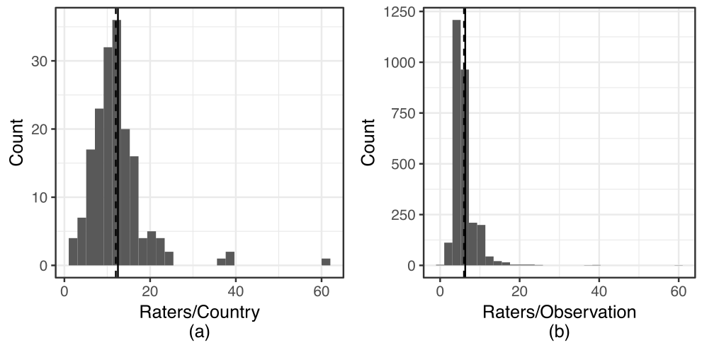
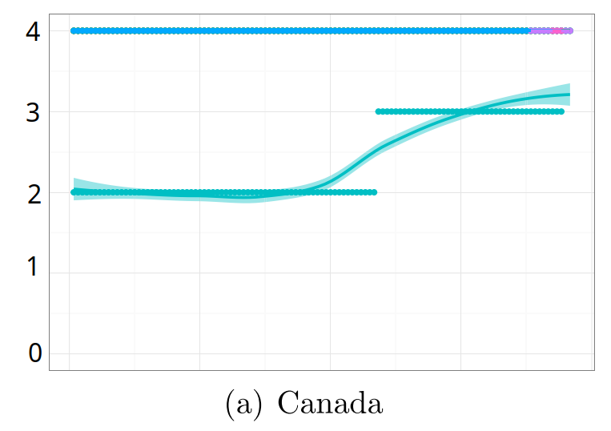
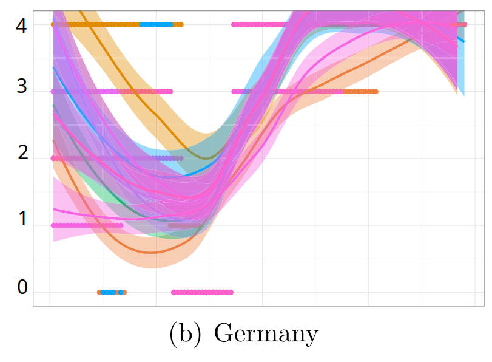
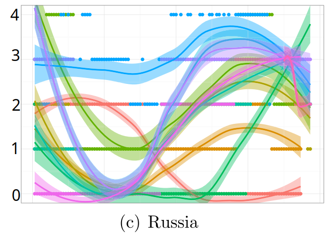
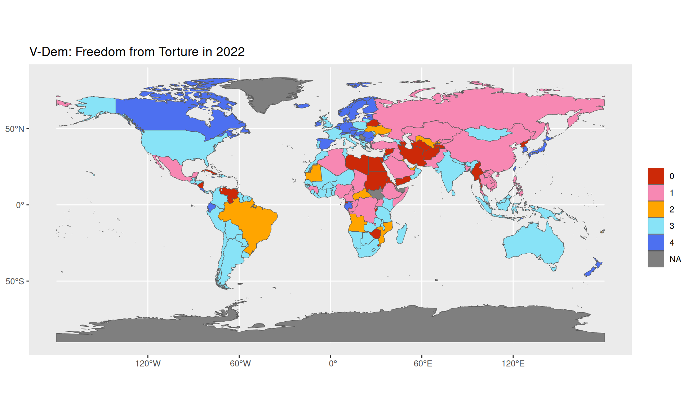
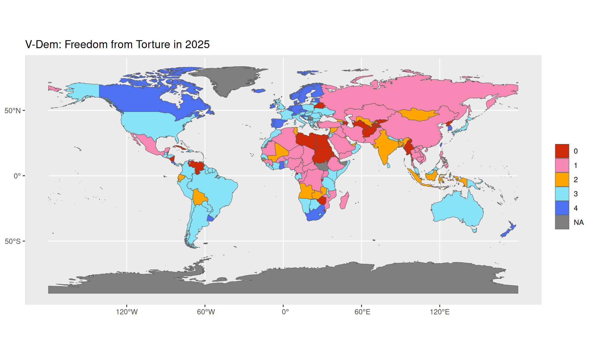
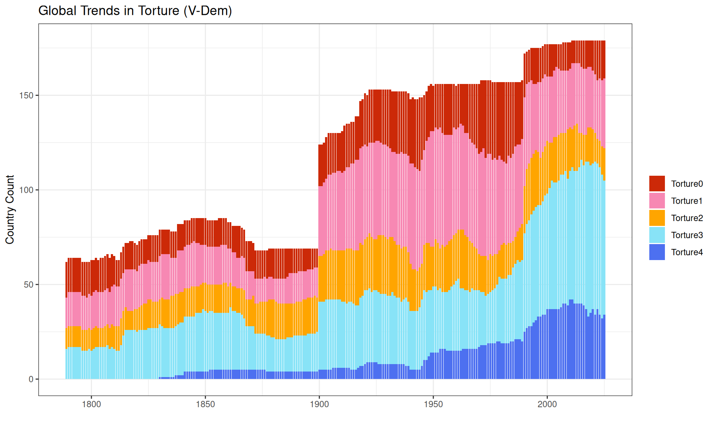
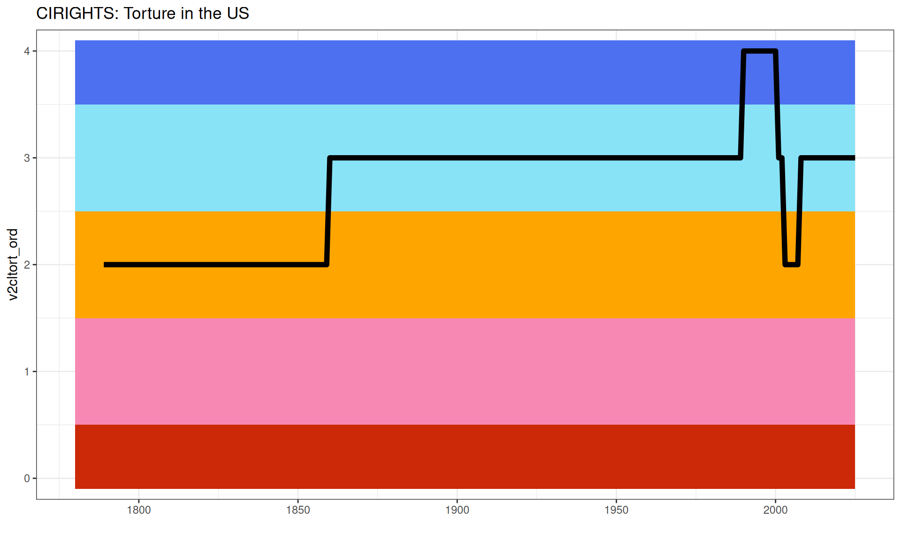

| year | v2clkill_nr | v2clkill_ord_codelow | v2clkill_ord | v2clkill_ord_codehigh |
|---|---|---|---|---|
| 1905 | 7 | 4 | 4 | 4 |
| 1915 | 7 | 4 | 4 | 4 |
| 1925 | 6 | 4 | 4 | 4 |
| 1935 | 6 | 4 | 4 | 4 |
| 1945 | 6 | 4 | 4 | 4 |
| 1955 | 6 | 4 | 4 | 4 |
| 1965 | 6 | 4 | 4 | 4 |
| 1975 | 6 | 4 | 4 | 4 |
| 1985 | 6 | 4 | 4 | 4 |
| 1995 | 6 | 4 | 4 | 4 |
| 2005 | 17 | 4 | 4 | 4 |
| 2015 | 13 | 4 | 4 | 4 |
Section 2: How effective have international institutions been in reducing the use of torture by governments around the world?
Justin Leinaweaver (Fall 2026)
“Torture refers to the purposeful inflicting of extreme pain, whether mental or physical, by government officials or by private individuals at the instigation of government officials” (p11).
The V-Dem measure of torture is (NOT) sufficiently valid and reliable for answering our research question
Every Country-Year is Coded by Multiple Experts

What do we do when the experts disagree?

| year | v2clkill_nr | v2clkill_ord_codelow | v2clkill_ord | v2clkill_ord_codehigh |
|---|---|---|---|---|
| 1905 | 7 | 4 | 4 | 4 |
| 1915 | 7 | 4 | 4 | 4 |
| 1925 | 6 | 4 | 4 | 4 |
| 1935 | 6 | 4 | 4 | 4 |
| 1945 | 6 | 4 | 4 | 4 |
| 1955 | 6 | 4 | 4 | 4 |
| 1965 | 6 | 4 | 4 | 4 |
| 1975 | 6 | 4 | 4 | 4 |
| 1985 | 6 | 4 | 4 | 4 |
| 1995 | 6 | 4 | 4 | 4 |
| 2005 | 17 | 4 | 4 | 4 |
| 2015 | 13 | 4 | 4 | 4 |
What do we do when the experts disagree?

| year | v2clkill_nr | v2clkill_ord_codelow | v2clkill_ord | v2clkill_ord_codehigh |
|---|---|---|---|---|
| 1905 | 21 | 3 | 3 | 3 |
| 1915 | 21 | 3 | 3 | 3 |
| 1925 | 10 | 3 | 3 | 3 |
| 1935 | 11 | 0 | 0 | 0 |
| 1955 | 11 | 4 | 4 | 4 |
| 1965 | 11 | 4 | 4 | 4 |
| 1975 | 11 | 4 | 4 | 4 |
| 1985 | 11 | 4 | 4 | 4 |
| 1995 | 11 | 4 | 4 | 4 |
| 2005 | 17 | 4 | 4 | 4 |
| 2015 | 9 | 4 | 4 | 4 |
What do we do when the experts disagree?

| year | v2clkill_nr | v2clkill_ord_codelow | v2clkill_ord | v2clkill_ord_codehigh |
|---|---|---|---|---|
| 1905 | 11 | 1 | 1 | 1 |
| 1915 | 11 | 1 | 1 | 2 |
| 1925 | 10 | 0 | 0 | 0 |
| 1935 | 10 | 0 | 0 | 0 |
| 1945 | 10 | 0 | 0 | 0 |
| 1955 | 10 | 1 | 1 | 2 |
| 1965 | 10 | 1 | 2 | 2 |
| 1975 | 10 | 1 | 2 | 2 |
| 1985 | 10 | 1 | 2 | 2 |
| 1995 | 10 | 3 | 3 | 3 |
| 2005 | 18 | 2 | 2 | 2 |
| 2015 | 15 | 1 | 1 | 1 |
Cross-national Comparisons: Same Year, Different Countries
Longitudinal Comparisons: Different Years, Same Country
Longitudinal, Cross-national Comparisons: Different Years, Different Countries
Report back your findings from univariate analysis of the V-Dem torture data



